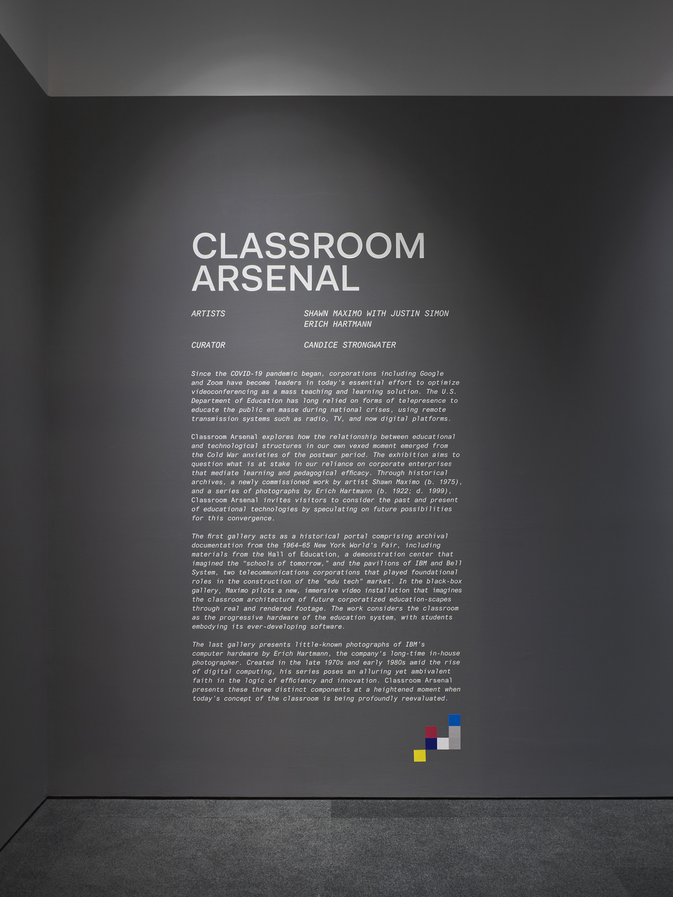
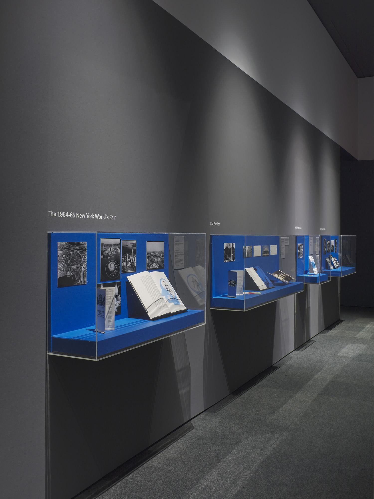
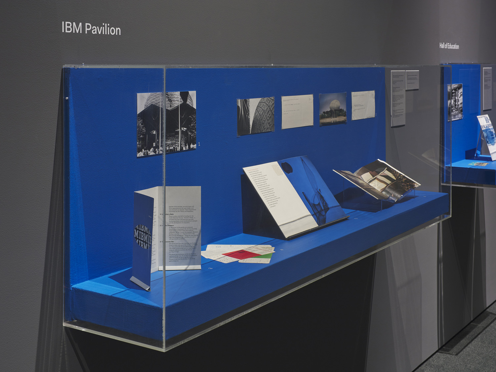
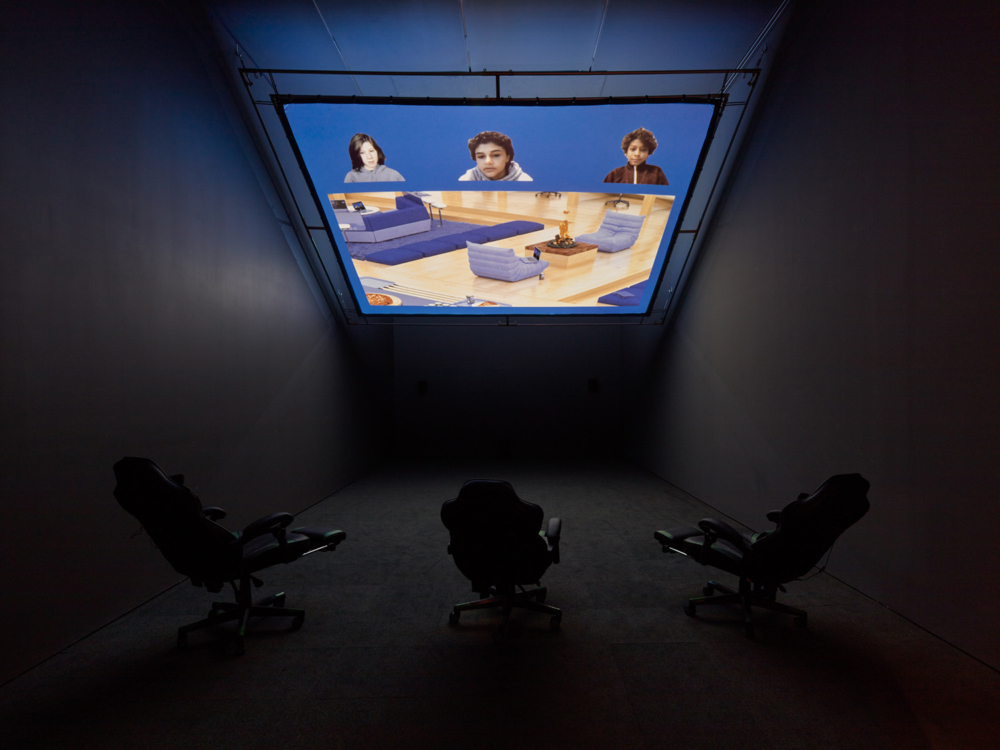
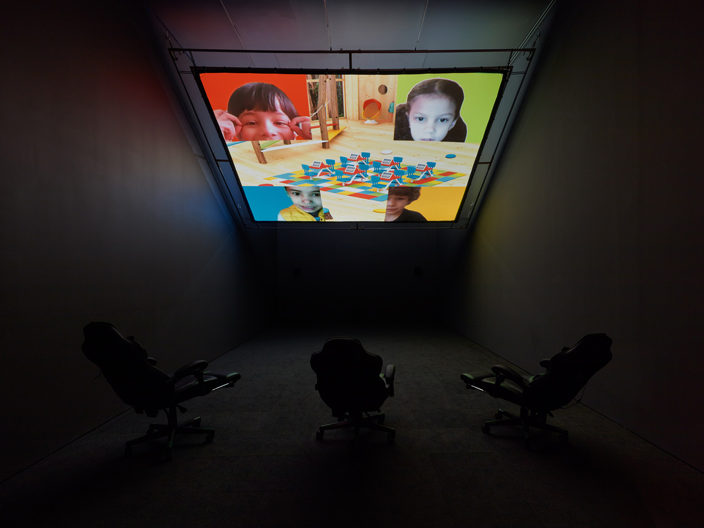
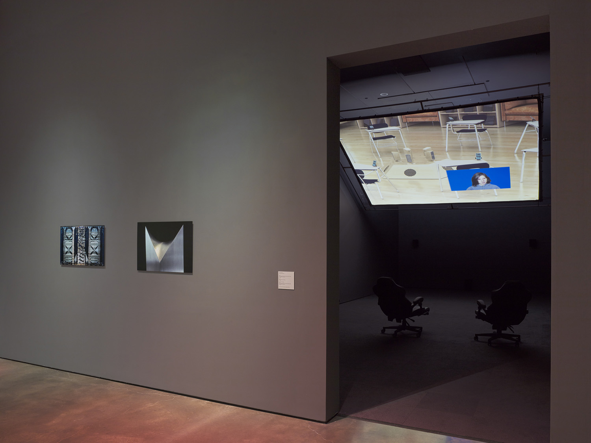
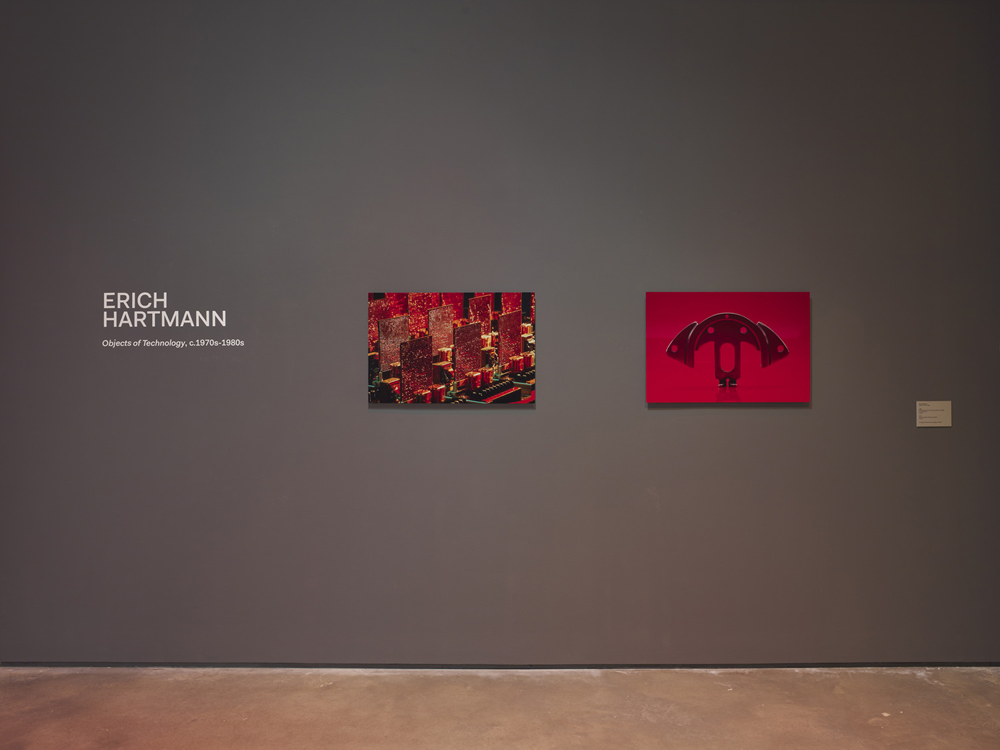
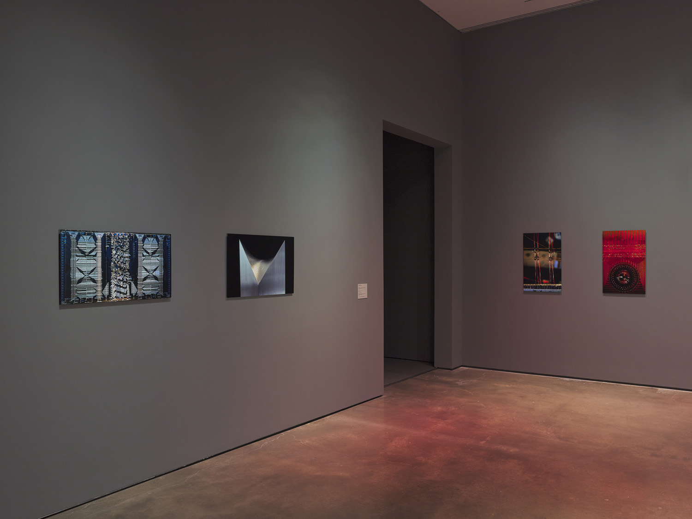

Due to the extraordinary circumstances of the COVID-19 health crisis, schools around the world have experienced a rapid and strenuous transition from in-person education to remote learning. In the U.S., enterprise technology corporations like Google and Zoom have become key collaborators in the questionable effort to optimize videoconferencing as a mass teaching and learning solution. Like the U.S. Department of Defense, the U.S. Department of Education has long relied on telepresence models during national crises.
Classroom Arsenal explores how the relationship between educational and technological structures in our own vexed moment emerged from the Cold War anxieties of the postwar period. The exhibition questions what is at stake in our reliance on corporate enterprises that mediate learning and pedagogical efficacy. Through historical archives, a newly commissioned work by artist Shawn Maximo (b. 1975), and a series of photographs by Erich Hartmann (1922; d. 1999), Classroom Arsenal invites visitors to consider the past and present of educational technologies by speculating on future possibilities for this convergence.
The first gallery acts as a historical portal comprising archival documentation and ephemera from the 1964–65 New York World’s Fair, including the Hall of Education, a demonstration center that imagined the “schools of tomorrow,” and the pavilions of IBM and Bell System, two telecommunications corporations that played foundational roles in the construction of the “Edu Tech” market. In the black box gallery, Maximo pilots a newly commissioned immersive video installation that imagines the classroom architecture of corporatized education-scapes through real and rendered footage. The work considers the classroom as the progressive hardware of the education system with students embodying its ever-developing software.
The last gallery presents little-known photographs of IBM’s computer hardware by Erich Hartmann, the company’s long-time in-house photographer. Created in the late 1970s and early ‘80s amid the rise of digital computing, his series poses an alluring yet ambivalent faith in the logic of efficiency and innovation. Classroom Arsenal presents these three distinct components at a heightened moment when today’s concept of the classroom is being profoundly re-evaluated.
Artists include: Shawn Maximo, with Justin Simon; Erich Hartmann.
Classroom Arsenal explores how the relationship between educational and technological structures in our own vexed moment emerged from the Cold War anxieties of the postwar period. The exhibition questions what is at stake in our reliance on corporate enterprises that mediate learning and pedagogical efficacy. Through historical archives, a newly commissioned work by artist Shawn Maximo (b. 1975), and a series of photographs by Erich Hartmann (1922; d. 1999), Classroom Arsenal invites visitors to consider the past and present of educational technologies by speculating on future possibilities for this convergence.
The first gallery acts as a historical portal comprising archival documentation and ephemera from the 1964–65 New York World’s Fair, including the Hall of Education, a demonstration center that imagined the “schools of tomorrow,” and the pavilions of IBM and Bell System, two telecommunications corporations that played foundational roles in the construction of the “Edu Tech” market. In the black box gallery, Maximo pilots a newly commissioned immersive video installation that imagines the classroom architecture of corporatized education-scapes through real and rendered footage. The work considers the classroom as the progressive hardware of the education system with students embodying its ever-developing software.
The last gallery presents little-known photographs of IBM’s computer hardware by Erich Hartmann, the company’s long-time in-house photographer. Created in the late 1970s and early ‘80s amid the rise of digital computing, his series poses an alluring yet ambivalent faith in the logic of efficiency and innovation. Classroom Arsenal presents these three distinct components at a heightened moment when today’s concept of the classroom is being profoundly re-evaluated.
Artists include: Shawn Maximo, with Justin Simon; Erich Hartmann.








All images credit: Installation views from Classroom Arsenal, Hessel Museum of Art, Center for Curatorial Studies, Bard College, Annandale-on-Hudson, NY, April 3–May 30, 2021. Master’s thesis exhibition curated by Candice Strongwater. Photo: Olympia Shannon 2021.